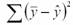
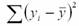
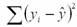
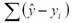
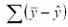

Coefficient of determination
Slope of the regression line
Mean square error
Standard error of the regression coefficient
S(b0)
The errors are normally distributed
The error terms have a constant variance
The errors have a mean of zero
A and B
A, B, and C
They become more scattered
The slope changes
The y-intercept changes
Both B and C, above
None of the above
30%
70%
10%
9%
Marginal values
Residuals
Mean square errors
Standard errors
-0.859
-0.895
188.099
206.710
218.719
37,618.95
26,824.83
12.5
11.2
9.02
13%
22%
44%
47%
158.52; 254.55
140.72; 272.35
149.18; 263.89
204.72; 208.35
205.63; 207.44
-3.06; a significant negative relationship
2.14; a significant positive relationship
-1.99; no significant relationship
5.24; a significant negative relationship
3.06; a significant positive relationship





This is the end of the test. When you have completed all the questions and reviewed your answers, press the button below to grade the test.